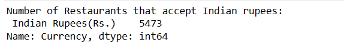

AGGREGATE RATING
OF RESTAURANTS
1.Number of Restaurants WRT customer's Review:
2.Number of Restaurants with rating 4 or above offer cuisines: :
3.Number of Restaurants that accecpt Indian Rupee:

4.Number and name of Restaurants that offer chinese and accapt Indian Rupee:
5.Percentage of Restaurants in New Delhi that offer chinese:
6.r2_score for different Machine Learning Models:
7.Locations of the Restaurants on map:

8.Distribution of Aggregate rating of Restaurants:
9.Aggregate ratig WRT different variables:
10.Rating of Restaurants WRT different cuisines:

11.Rating WRT country code:
12.Rating WRT cites:

13.Relationship Between Aggregate rating and votes:
14.Relationship Between Aggregate rating and Average cost for two: